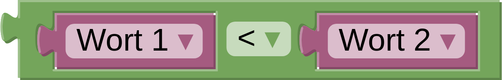

Lexikographisch
Das Programm soll ein Wort einlesen und überprüfen, ob das Wort
im Wörterbuch vor dem Wort "Informatik" stehen würde.
Falls ja, soll das Programm davor ausgeben, ansonsten danach.
Bitte schau dir vorab die Erläuterungen der Bausteine unter "weitere Hinweise" an.
Das Programm soll zwei Wörter einlesen und sie in der Wörterbuch-Reihenfolge ausgeben.
Bitte schau dir vorab die Erläuterungen der Bausteine unter "weitere Hinweise" an.
Das Programm soll zwei Wörter einlesen, das kleinere Wort ausgeben und sich das andere Wort merken. Danach soll es für jedes weitere Wort das neue Wort mit dem gemerkten Wort vergleichen, wieder das kleinere ausgeben und das andere merken. Am Ende soll es das zuletzt gemerkte Wort ausgeben.
Bitte schau dir vorab die Erläuterungen der Bausteine unter "weitere Hinweise" an.
Beachte: Dein Programm muss mit allen Testfällen zurechtkommen.
Weitere Hinweise:
Mit dem Baustein  ,
kann ein Programm die Wörterbuch-Reihenfolge herausfinden.
,
kann ein Programm die Wörterbuch-Reihenfolge herausfinden.
Ändere den Vergleich auf "<" (kleiner).
Wenn Wort1 im Wörterbuch vor Wort2 stehen würde, ist es "kleiner" als Wort2.

Ein Beispiel:
|
Eingabe:
Berechnung
Algorithmus
Algensalat
Information
Informatik Programmieren Computer |
Ausgabe:
davor
Algensalat
Algorithmus
Informatik
Information Computer Programmieren |